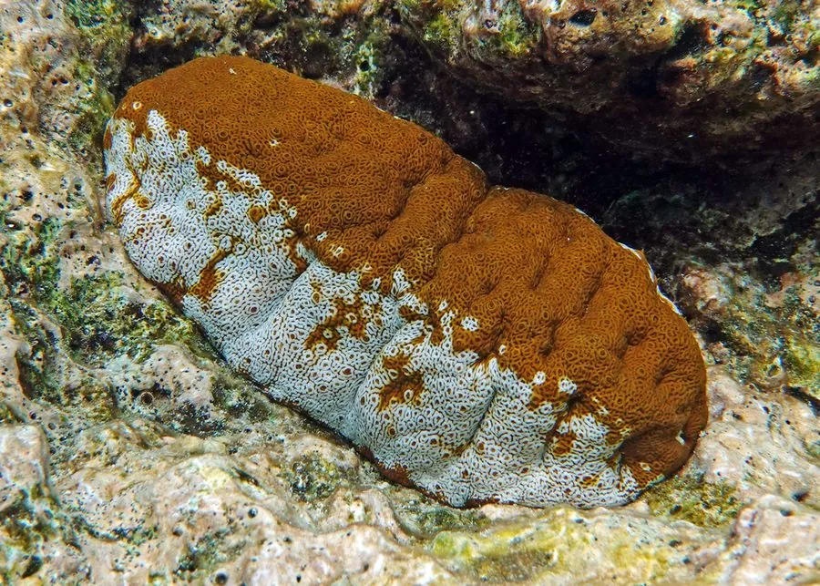

其他无脊椎动物 · 动物界
白底辐肛参 Actinopyga mauritiana

体表黑褐带白斑、腹面白色的热带海参，栖于珊瑚礁礁坪激流处，以沙中有机质为食，是重要食用参。
- 分类
- 门棘皮动物门纲海参纲目楯手目科海参科属辐肛参属
- 栖息环境
- 热带珊瑚礁礁坪外缘与珊瑚碎石区，喜激流
- 地理分布
- 印度洋至太平洋热带海域，自红海、东非至东南亚、澳大利亚北部
- 保护级别
- 重要经济海参，野生资源因过度采捕下降，多国限制采捕
物种志
白底辐肛参的体长约二十至三十厘米，体呈圆筒形，体壁坚硬，背面黑褐至暗绿色并散布白色斑块，腹面白色，管足排列成三列。辐肛参之名来自肛门周围的五个齿状突起，这些突起像车轮的辐条。口周围有二十枚触手，体表粗糙，生有颗粒状疣足，手感像一块硬皮。
它分布于印度洋至太平洋的热带珊瑚礁，从红海、东非到东南亚、澳大利亚北部，栖息在礁坪外缘和激流冲刷的珊瑚碎石区，常半埋于沙中。它以触手抓取沙粒，消化其中的有机质和微小生物。它是重要的食用海参，干制品价格较高，长期过度捕捞导致许多海域资源枯竭，现多国实行采捕限制并发展人工增养殖。
形态与习性
- 体长约二十至三十厘米，体壁坚硬
- 体色背面黑褐带白斑，腹面白色
- 肛门周围有五个齿状突起，故名辐肛参
- 食性吞食沙粒，消化其中有机质
- 栖息礁坪外缘与珊瑚碎石区，喜激流
- 利用重要食用参，干制品价格高
趣味知识
- 它肛门周围那五个白齿像车轮的辐条，辐肛参的名字由此而来。
- 它专挑水流急的礁坪待着，激流会把有机碎屑送到嘴边。
- 它的干制品在市场上价格不低，野生资源因此被捞得很狠。